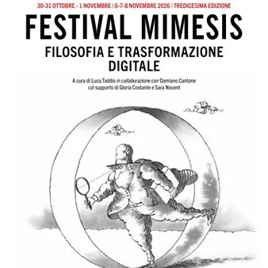

da ven 30 ott a sab 21 nov
Festival Mimesis 2026
Incontri, dialoghi e iniziative culturali dedicati a filosofia e trasformazione digitale, con ospiti e appuntamenti in diverse sedi del Friuli.
 Indicazioni
Indicazioni
- Costi e prenotazioni
- Costo non indicato · Prenotazione non indicata
- Programma
- Programma raccolto. Gli appuntamenti delle diverse schede sono riuniti in questa pagina.
- In caso di maltempo
- Nessuna indicazione specifica pubblicata.
- Note
- Le schede dei singoli appuntamenti sono state unite nella manifestazione principale.
L’EVENTO
Descrizione completa
Fin dalla sua nascita, lo spirito del Festival è quello di non chiudere il pensiero in compartimenti isolati, ma di intrecciarlo con le scienze, la letteratura, la poesia, l’ingegneria e la politica: solo unendo prospettive differenti è possibile cercare risposte adeguate alle domande del presente. Così, anche quest’anno, la Regione sarà animata da incontri e dialoghi in cui filosofi e scienziati, scrittori e ingegneri, politici e insegnanti si confronteranno insieme per illuminare i nodi più complessi della digitalizzazione e della contemporaneità.
Il Festival si rivolge a un pubblico ampio, a chiunque coltivi interessi culturali e voglia contribuire, attraverso una conoscenza di qualità e la divulgazione scientifica, alla costruzione di una cittadinanza più consapevole. Come sempre, numerose realtà associative del territorio parteciperanno alla manifestazione, unite dall’obiettivo comune di diffondere cultura e informazione. I protagonisti principali restano però le nuove generazioni: studentesse e studenti che avranno l’opportunità di vivere percorsi interdisciplinari che la scuola, da sola, non riesce sempre a offrire.
Scarica la locandina per il programma completo
Venerdì 30 ottobre - Ore 17:00
Inaugurazione della mostra " Arte e percezione nelle opere di Alberto Argenton, Gaetano Kanisza, Manfredo Massironi e nella musica di Paolo Bozzi ".
Mostra curata da Tiziano Agostini, Mauro Antonelli, Ivana Bianchi, Laura Messina Argenton, Tamara Prest, Ian Verstegen .
Interverranno Luca Taddio, Maurizio Lorber e Tiziano Agostini .
Arte e percezione propone un percorso tra arti visive e musica, mettendo in dialogo le ricerche di Alberto Argenton, Gaetano Kanizsa e Manfredo Massironi con la musica di Paolo Bozzi. La mostra invita a riflettere sul modo in cui vediamo, ascoltiamo e interpretiamo la realtà: una realtà che non si offre mai semplicemente allo sguardo o all’ascolto, ma prende forma attraverso la percezione. Un viaggio tra immagini, suoni e processi percettivi, dove arte e scienza si incontrano per interrogare il nostro modo di conoscere e di fare esperienza del mondo.
LA FILOSOFIA OGGI: SFIDE E PROSPETTIVE
(incontro riservato alle scuole)
Simone Furlani e Luca Grion
Fare filosofia oggi vuol dire confrontarsi con delle sfide che richiedono menti allenate e sguardi attenti. L’intelligenza
artificiale, la vita condivisa online e la nostra immagine sui social sono solo alcuni degli aspetti che ci chiedono di allenare il pensiero di fronte alla crescente complessità del mondo.
Roberto Taddeo in dialogo con Marco Florit
Tra il 1977 e il 1984, Ludwig semina morte tra Italia e Germania. Roberto Taddeo ricostruisce crimini, vittime e indagini, facendo emergere legami, retroscena e zone d’ombra che ancora oggi circondano uno dei casi criminali più oscuri del Dopoguerra.
Massimo Donà in dialogo con Giorgio Riva
IL PROGRAMMA
Programma e orari
Le singole date appartengono alla stessa manifestazione. Ogni sede verificata dispone delle proprie indicazioni.
Programma completo della manifestazione
- Il calendario integrale è disponibile nella fonte ufficiale e può comprendere appuntamenti precedenti o successivi alle tre settimane mostrate.
Da Venerdì 30 ottobre a Sabato 21 novembre · Festival Mimesis - Arte e percezione nelle opere visive di Alberto Argenton, Gaetano Kanisza, Manfredo Massironi e nella musica di Paolo Bozzi
Udine · Make - Spazio Espositivo Palazzo Manin Via Daniele Manin, 6/a Udine
- Fin dalla sua nascita, lo spirito del Festival è quello di non chiudere il pensiero in compartimenti isolati, ma di intrecciarlo con le scienze, la letteratura, la poesia, l’ingegneria e la politica: solo unendo prospettive differenti è possibile cercare risposte adeguate alle…
Da Venerdì 30 ottobre a Domenica 8 novembre · Festival Mimesis. Filosofia e trasformazione digitale
Udine · Udine Varie sedi
- Fin dalla sua nascita, lo spirito del Festival è quello di non chiudere il pensiero in compartimenti isolati, ma di intrecciarlo con le scienze, la letteratura, la poesia, l’ingegneria e la politica: solo unendo prospettive differenti è possibile cercare risposte adeguate alle…
Venerdì 30 ottobre · Festival Mimesis : LA FILOSOFIA OGGI: SFIDE E PROSPETTIVE - incontro riservato alle scuole
Tolmezzo · Cinema David
- LA FILOSOFIA OGGI: SFIDE E PROSPETTIVE (incontro riservato alle scuole) Simone Furlani e Luca Grion Fare filosofia oggi vuol dire confrontarsi con delle sfide che richiedono menti allenate e sguardi attenti. L’intelligenza artificiale, la vita condivisa online e la nostra…
Venerdì 30 ottobre · Festival Mimesis - Ludwig. I delitti, le indagini, i processi, le nuove ipotesi
Udine · Libreria Tarantola Via Vittorio Veneto, 20 Udine
- Fin dalla sua nascita, lo spirito del Festival è quello di non chiudere il pensiero in compartimenti isolati, ma di intrecciarlo con le scienze, la letteratura, la poesia, l’ingegneria e la politica: solo unendo prospettive differenti è possibile cercare risposte adeguate alle…
Venerdì 30 ottobre · Festival Mimesis - Musica e filosofia
Udine · Fondazione Friuli, via Gemona, 1 Udine
- Fin dalla sua nascita, lo spirito del Festival è quello di non chiudere il pensiero in compartimenti isolati, ma di intrecciarlo con le scienze, la letteratura, la poesia, l’ingegneria e la politica: solo unendo prospettive differenti è possibile cercare risposte adeguate alle…
Sabato 31 ottobre · Festival Mimesis - Coltivare l'infanzia. Semi e storie per accompagnare i passaggi della crescita
Udine · Librerie.Coop Friuli Via dei Rizzani, 1/3 Udine
- Fin dalla sua nascita, lo spirito del Festival è quello di non chiudere il pensiero in compartimenti isolati, ma di intrecciarlo con le scienze, la letteratura, la poesia, l’ingegneria e la politica: solo unendo prospettive differenti è possibile cercare risposte adeguate alle…
Sabato 31 ottobre · Festival Mimesis - La filosofia è un gioco da ragazzi
Udine · Librerie Coop. Friuli Via dei Rizzani, 1/3 Udine
- Fin dalla sua nascita, lo spirito del Festival è quello di non chiudere il pensiero in compartimenti isolati, ma di intrecciarlo con le scienze, la letteratura, la poesia, l’ingegneria e la politica: solo unendo prospettive differenti è possibile cercare risposte adeguate alle…
Sabato 31 ottobre · Festival Mimesis - La lingua libera
Udine · Torre di Santa Maria Via Antonio Zanon, 24 Udine
- Fin dalla sua nascita, lo spirito del Festival è quello di non chiudere il pensiero in compartimenti isolati, ma di intrecciarlo con le scienze, la letteratura, la poesia, l’ingegneria e la politica: solo unendo prospettive differenti è possibile cercare risposte adeguate alle…
Sabato 31 ottobre · Festival Mimesis - La via dell'enneagramma
Udine · Fondazione Friuli Via Gemona, 1 Udine
- Fin dalla sua nascita, lo spirito del Festival è quello di non chiudere il pensiero in compartimenti isolati, ma di intrecciarlo con le scienze, la letteratura, la poesia, l’ingegneria e la politica: solo unendo prospettive differenti è possibile cercare risposte adeguate alle…
Sabato 31 ottobre · Festival Mimesis - Premio Udine Filosofia a Silvano Tagliagambe
Udine · Torre di Santa Maria Via Antonio Zanon, 24 Udine
- Fin dalla sua nascita, lo spirito del Festival è quello di non chiudere il pensiero in compartimenti isolati, ma di intrecciarlo con le scienze, la letteratura, la poesia, l’ingegneria e la politica: solo unendo prospettive differenti è possibile cercare risposte adeguate alle…
Sabato 31 ottobre · Festival Mimesis - Questo è quanto: La fisica quantistica in cinque idee
Udine · Fondazione Friuli Via Gemona, 1 Udine
- Fin dalla sua nascita, lo spirito del Festival è quello di non chiudere il pensiero in compartimenti isolati, ma di intrecciarlo con le scienze, la letteratura, la poesia, l’ingegneria e la politica: solo unendo prospettive differenti è possibile cercare risposte adeguate alle…
Sabato 31 ottobre · Festival Mimesis - Salute mentale, politica e nuove prospettive di cura
Colloredo di Monte Albano · Azienda Agricola "Giuseppe Maggiori" Via Pissignano Colloredo di Montealbano
- Fin dalla sua nascita, lo spirito del Festival è quello di non chiudere il pensiero in compartimenti isolati, ma di intrecciarlo con le scienze, la letteratura, la poesia, l’ingegneria e la politica: solo unendo prospettive differenti è possibile cercare risposte adeguate alle…
Venerdì 6 novembre · Festival Mimesis - Arte e Scienza
Udine · Casa Cavazzini Via Cavour, 14 Udine
- Fin dalla sua nascita, lo spirito del Festival è quello di non chiudere il pensiero in compartimenti isolati, ma di intrecciarlo con le scienze, la letteratura, la poesia, l’ingegneria e la politica: solo unendo prospettive differenti è possibile cercare risposte adeguate alle…
Venerdì 6 novembre · Festival Mimesis - Da Nigarjuna alla fenomenologia
Udine · Libreria Tarantola Via vittoria Veneto, 20 Udine
- Fin dalla sua nascita, lo spirito del Festival è quello di non chiudere il pensiero in compartimenti isolati, ma di intrecciarlo con le scienze, la letteratura, la poesia, l’ingegneria e la politica: solo unendo prospettive differenti è possibile cercare risposte adeguate alle…
Venerdì 6 novembre · Festival Mimesis - Daniele D'Agaro Trio
Udine · Casa della Contadinanza Piazzale della Patria del Friuli Udine
- Fin dalla sua nascita, lo spirito del Festival è quello di non chiudere il pensiero in compartimenti isolati, ma di intrecciarlo con le scienze, la letteratura, la poesia, l’ingegneria e la politica: solo unendo prospettive differenti è possibile cercare risposte adeguate alle…
Venerdì 6 novembre · Festival Mimesis - Effetto Deleuze. Il pensiero umano come macchina
Udine · Casa Cavazzini Via Cavour, 14 Udine
- Fin dalla sua nascita, lo spirito del Festival è quello di non chiudere il pensiero in compartimenti isolati, ma di intrecciarlo con le scienze, la letteratura, la poesia, l’ingegneria e la politica: solo unendo prospettive differenti è possibile cercare risposte adeguate alle…
Venerdì 6 novembre · Festival Mimesis - I pericoli delle reti sociali
Udine · Fondazione Friuli Via Gemona, 1 Udine
- Fin dalla sua nascita, lo spirito del Festival è quello di non chiudere il pensiero in compartimenti isolati, ma di intrecciarlo con le scienze, la letteratura, la poesia, l’ingegneria e la politica: solo unendo prospettive differenti è possibile cercare risposte adeguate alle…
Venerdì 6 novembre · Festival Mimesis - La democrazia e le furie. Pasolini e il tragico
Udine · Fondazione Friuli Via Gemona, 1 Udine
- Fin dalla sua nascita, lo spirito del Festival è quello di non chiudere il pensiero in compartimenti isolati, ma di intrecciarlo con le scienze, la letteratura, la poesia, l’ingegneria e la politica: solo unendo prospettive differenti è possibile cercare risposte adeguate alle…
Sabato 7 novembre · Festival Mimesis - È ancora possibile la poesia?
Udine · Torre di Santa Maria Via Antonia Zanon, 24 Udine
- Fin dalla sua nascita, lo spirito del Festival è quello di non chiudere il pensiero in compartimenti isolati, ma di intrecciarlo con le scienze, la letteratura, la poesia, l’ingegneria e la politica: solo unendo prospettive differenti è possibile cercare risposte adeguate alle…
Sabato 7 novembre · Festival Mimesis - Filosofia e trasformazione digitale
Gorizia · Sede UniUD via Santa Chiara 1/A
- Platone nella Silicon Valley. Anima, corpo, intelligenza artificiale Simone Regazzoni e Roberto Manzocco in dialogo con Alessio Martino Come possiamo mettere in dialogo il pensiero di Platone con le sfide poste dall’Intelligenza Artificiale? Simone Regazzoni e Roberto Manzocco ce…
Sabato 7 novembre · Festival Mimesis - Il rinascimento psichedelico e le sue cure
Udine · Casa Cavazzini, Via Cavour, 14 Udine
- Fin dalla sua nascita, lo spirito del Festival è quello di non chiudere il pensiero in compartimenti isolati, ma di intrecciarlo con le scienze, la letteratura, la poesia, l’ingegneria e la politica: solo unendo prospettive differenti è possibile cercare risposte adeguate alle…
Sabato 7 novembre · Festival Mimesis - L'istruzione dell'immaginazione
Udine · Torre di Santa Maria via Antonio Zanon, 24 Udine
- Fin dalla sua nascita, lo spirito del Festival è quello di non chiudere il pensiero in compartimenti isolati, ma di intrecciarlo con le scienze, la letteratura, la poesia, l’ingegneria e la politica: solo unendo prospettive differenti è possibile cercare risposte adeguate alle…
Sabato 7 novembre · Festival Mimesis - Letterature della Metamorfosi. Goethe, Kafka, Bulgakov
Udine · Libreria Tarantola Via Vittorio Veneto, 20 Udine
- Fin dalla sua nascita, lo spirito del Festival è quello di non chiudere il pensiero in compartimenti isolati, ma di intrecciarlo con le scienze, la letteratura, la poesia, l’ingegneria e la politica: solo unendo prospettive differenti è possibile cercare risposte adeguate alle…
Sabato 7 novembre · Festival Mimesis - Premio Udine Filosofia a Nicoletta Cusano
Udine · Casa Cavazzini Via Cavour, 14 Udine
- Fin dalla sua nascita, lo spirito del Festival è quello di non chiudere il pensiero in compartimenti isolati, ma di intrecciarlo con le scienze, la letteratura, la poesia, l’ingegneria e la politica: solo unendo prospettive differenti è possibile cercare risposte adeguate alle…
Domenica 8 novembre · Festival Mimesis - Cosa significa pensare? Dall'essere umano all'intelligenza artificiale
Udine · Casa Cavazzini Via Cavour, 14 Udine
- Fin dalla sua nascita, lo spirito del Festival è quello di non chiudere il pensiero in compartimenti isolati, ma di intrecciarlo con le scienze, la letteratura, la poesia, l’ingegneria e la politica: solo unendo prospettive differenti è possibile cercare risposte adeguate alle…
Domenica 8 novembre · Festival Mimesis - I miei nervi scoperti
Udine · Libreria Tarantola Via Vittorio Veneto, 20 Udine
- Fin dalla sua nascita, lo spirito del Festival è quello di non chiudere il pensiero in compartimenti isolati, ma di intrecciarlo con le scienze, la letteratura, la poesia, l’ingegneria e la politica: solo unendo prospettive differenti è possibile cercare risposte adeguate alle…
Domenica 8 novembre · Festival Mimesis - Il mondo è tutto ciò che resta. Una metafisica per il XXI secolo
Udine · Fondazione Friuli Via Gemona, 1 Udine
- Fin dalla sua nascita, lo spirito del Festival è quello di non chiudere il pensiero in compartimenti isolati, ma di intrecciarlo con le scienze, la letteratura, la poesia, l’ingegneria e la politica: solo unendo prospettive differenti è possibile cercare risposte adeguate alle…
Domenica 8 novembre · Festival Mimesis - La sostituzione dell'umano
Udine · Casa Cavazzini Via Cavour, 14 Udine
- Fin dalla sua nascita, lo spirito del Festival è quello di non chiudere il pensiero in compartimenti isolati, ma di intrecciarlo con le scienze, la letteratura, la poesia, l’ingegneria e la politica: solo unendo prospettive differenti è possibile cercare risposte adeguate alle…
Domenica 8 novembre · Festival Mimesis - La storia e il suo incoscio: Gramsci e Pasolini
Colloredo di Monte Albano · Azienda Agricola Giuseppe Maggiori Via Pissignano Colloredo di Montealbano
- Fin dalla sua nascita, lo spirito del Festival è quello di non chiudere il pensiero in compartimenti isolati, ma di intrecciarlo con le scienze, la letteratura, la poesia, l’ingegneria e la politica: solo unendo prospettive differenti è possibile cercare risposte adeguate alle…
INFORMAZIONI UTILI
Prima di partire
- Controllare la fonte prima di partire.
ORGANIZZAZIONE